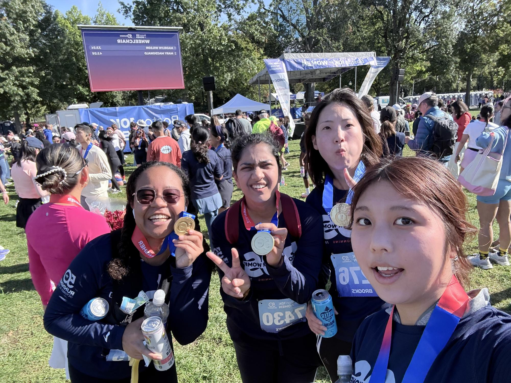

Master of Finance
Sep 2026 to Sep 2027
Hult International Business School, Boston, MA
- Graduate finance studies in progress
About
I’m Ritsuko, a Master of Finance student at Hult International Business School in Boston. I completed my BBA in Business Analytics in May 2026, graduating With Distinction with a 3.97/4.00 GPA.
An analyst role in Boston where finance and data meet: financial analysis, FP&A, business analytics, or consulting. I want to join a team where my work helps people make real decisions.
Taking a messy question and making it clear. For a class project, I forecast PayPal’s revenue four quarters ahead; the adjusted forecast came within 2% of reported results in every quarter. I’m also comfortable presenting. At LISC, I presented to a real client every week, and our team placed 3rd out of 36. Teammates often turn to me to refine our slides and make the story easier to follow.
I don’t like sharing a number without explaining what it means for the decision. If I can’t say why a result matters, I’m not done yet.
I grew up between Japan, Malaysia, and the US, changing schools four times along the way. That taught me to adapt quickly and work with people from very different backgrounds. Japanese is my first language, I speak French at B1 level, and I’m learning Mandarin.
I finished high school in the IB program at the International School of Penang in Malaysia. I initially planned to study engineering, but IB Economics was the subject that came naturally to me. I liked how it explained the reasons behind everyday decisions, and that drew me toward business.
Outside class, I was president of the debate club, where I learned to build an argument and defend it on the spot. For several years, I was also part of Do Something Society, a volunteer club. I helped with fundraising, designed posters for school events, and joined beach cleanups along the coast. I also taught math to children at an orphanage in Malaysia, creating worksheets to fit what they needed.
With support from my professors, I chose Business Analytics. I still enjoy the moment when my own analysis reveals something useful. Outside class, I was Head of Marketing and a founding board member of HackHult, a student club that grew from a handful of people to about 60 members. I also volunteered as an Orientation Leader for two intakes.
Education
Sep 2026 to Sep 2027
Hult International Business School, Boston, MA
Sep 2023 to May 2026
Hult International Business School, Boston, MA
Credentials
Harvard Business School Online
Feb 20, 2025 · Pass
Management Consulting Institute
Jul 2025
Global Innovation Management Institute
Nov 2025
Open Avenues Foundation
Oct 2026
I draw—the dog on this site, Belle, is my own illustration—and I enjoy trying new things, from hackathons to running a 10K. Learning languages is another interest I keep coming back to.
A personal notebook
A few milestones outside the classroom and the spreadsheet.

Personal milestone · October 2025
Completed the 10K alongside friends—a personal milestone worth celebrating.
Finishing 10 kilometers alongside friends gave me a milestone to celebrate beyond my studies and work. The shared experience is what makes this finish line memorable.
10K finisher